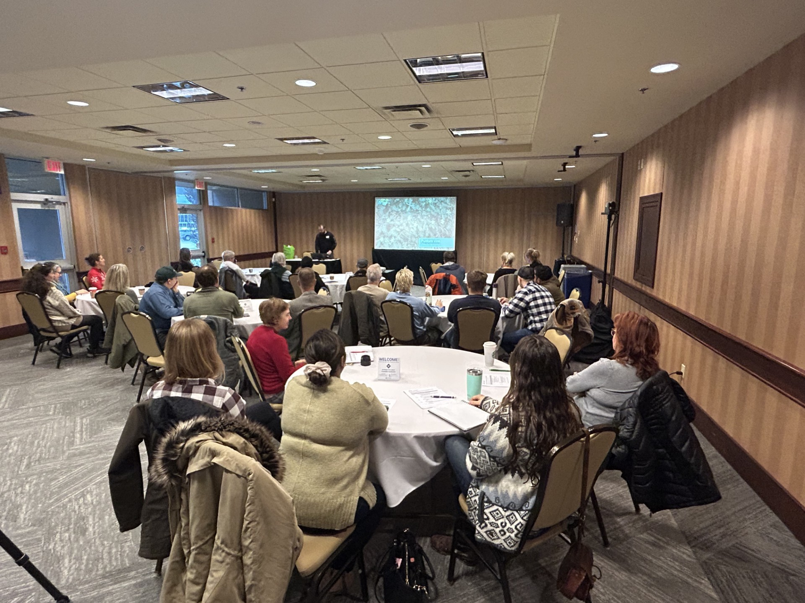
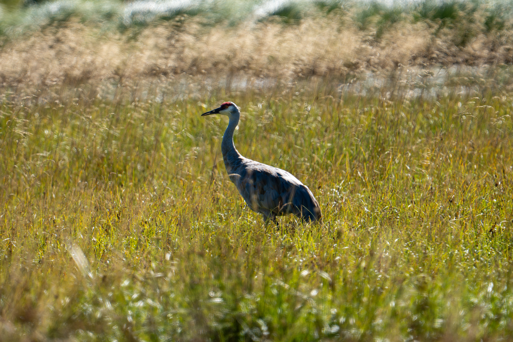

Connecting field ecology with policy, funding, and people.
Torin Kelly is a Registered Professional Biologist (RPBio #5179) and Lead of Special Projects at the Invasive Species Council of BC, where he designs and delivers programmes that connect field ecology with policy, funding, and people. His work spans the full project lifecycle, from scoping and grant writing through field delivery, reporting, and stakeholder engagement.
With a BSc in Ecological Restoration and a Diploma in Forest and Natural Areas Management, both from BCIT, where he was awarded the CIF Gold Medal, Torin brings strong scientific grounding to practical, landscape-level problems.
His portfolio includes leading surveillance and preparedness programmes funded by the federal government, applied research trials on utility rights-of-way, provincial training initiatives for agricultural producers, and youth environmental grant programmes. He has worked with First Nations, municipal governments, industry, and NGOs across British Columbia.
Torin is currently sitting on the City of Maple Ridge's Environment and Climate Change Advisory Committee, and a board member of the Kanaka Environmental & Education Partnership Society.
Photo: Torin Kelly
About
A practitioner's path through ecology, operations, and policy.
Background
I started my career in forestry at BCIT in 2016, but quickly realized that the most interesting ecological work happened at the interface between urban and natural areas. That curiosity led me to invasive species management, a practical way to keep those spaces healthy. Through restoration contracts and field work across the Lower Mainland, I learned the landscape by working with First Nations, local governments, and provincial agencies.
When I moved into a crew supervisor role, I discovered I had a knack for the people side of field work. Five years managing teams at McDonald's Canada had given me the foundations; invasive species fieldwork across the Cariboo-Chilcotin refined them. I built work plans, safety protocols, and logistics systems that kept crews moving safely and efficiently.
Teaching came next. I led a hybrid youth program, in-person and virtual across BC, developing resources that connected young people to ecosystem management and gave them meaningful capstone projects and volunteer hours. That experience showed me something crucial: invasive species management was important, but it was only one piece of the larger story.
That's when the Ecological Restoration program at BCIT made sense. Two years of full-time study gave me a more complete picture of what ecosystem health and restoration could actually look like. My RPBio certification followed, and I moved into my current role with a clearer mandate: to design and deliver programs that connect field ecology with policy, funding, and people.
Career Progression
2011 – 2016
Swing Manager
Mcdonald's Canada
Managed daily scheduling and training for front-line staff, oversaw health and safety compliance, handled cash operations and food safety protocols, and coordinated
promotional campaigns across multiple locations.
2016 – 2018
Habitat Restoration Technician
Green Admiral Natural Restoration
Delivered restoration planting, invasive removal, and site preparation across Metro Vancouver ecological restoration contracts.
2018 – 2020
Field Team Supervisor
Invasive Species Council of BC
Supervised field crews conducting invasive plant treatment, survey, and monitoring on public and private lands.
2020 – 2021
Field Operations Coordinator
Invasive Species Council of BC
Coordinated seasonal field operations, scheduling, and data management across multiple regional treatment programs.
2022 – Present
Lead, Special Projects
Invasive Species Council of BC
Designs and delivers province- and Canada-wide programmes across agriculture, utilities, invasive pig preparedness, and youth engagement. Responsible for scoping, grant writing, partner coordination, reporting, and staff supervision.
Current Focus
With my RPBio designation, I'm moving beyond invasive species specialization toward becoming a more broadly qualified environmental professional in ecological restoration, both aquatic and terrestrial systems across BC. I'm taking on volunteer roles and community leadership positions to build expertise in areas where I want to deepen my practice: riparian assessment, restoration planning, and stakeholder engagement in development and resource project contexts.
My field focus right now is on applied research and program design. I'm leading a thermal treatment efficacy trial with an industry partner, developing best management practices for utility rights-of-way in partnership with BC Hydro and FortisBC, and continuing to mentor the next generation of invasive species practitioners through training and education. I'm also exploring governance work in development and resource projects, but as the next phase of my career.
Projects
A practitioner's path through ecology, operations, and policy.
Filter

Invasive Species Training for the Agriculture Sector
A $160,000 IAF-funded program delivering eLearning, in-person workshops, and field resources to 550+ agricultural producers across BC.
FacilitationScientific CommunicationOperations
Read more
Project Context
Agricultural producers face significant productivity losses from invasive plants, insects, and pathogens, but have historically had limited access to sector-specific, applied training. This programme addressed that gap through multiple delivery formats.

Methods & Approach
Developed and delivered four online knowledge-sharing webinars (505 combined registrants)
Hosted two in-person hybrid workshops in Williams Lake (November 2025) and Penticton (December 2025) with 92 combined attendees
Developed two self-paced eLearning courses (Forage; Fruits, Berries & Vineyards)
Produced a five-video micro-learning series on year-round invasive species risk reduction
Developed a Field Guide for Identification of Agricultural Invasive Species
Engaged 15 project partners; coordinated expert speakers from industry, government, and academia
Outcomes
550 direct participants engaged across all delivery formats
Two eLearning courses published and publicly accessible
Five micro-learning videos produced and hosted online
Field identification guide developed (pending graphic design finalization)
Participants included forage producers, cattle ranchers, fruit and berry growers, vineyard owners, First Nations members, government staff, and consultants
Targeted Goat Grazing Trials
Two-year applied research trial evaluating targeted goat grazing as an IPM alternative on Enbridge pipeline rights-of-way near Mackenzie, BC.
ResearchMonitoringOperations
Read more
Project Context
Traditional right-of-way vegetation management relies on mechanical clearing and herbicide application. Both methods face ongoing challenges related to cost, environmental impact, and public perception, particularly in areas adjacent to Indigenous territories or water bodies. Enbridge sought evidence-based alternatives suited to difficult terrain.
Methods & Approach
Deployed 30 goats over one week on a 0.5-hectare ROW site approximately 50 km northeast of Mackenzie, BC
Established five 1 m² quadrats in each grazing and control area; clipped pre-grazing biomass and wet-weighed by species
Added adjacent control plots in Year 2 to strengthen comparative analysis
Set up photo points at four plot corners in both treatment and control areas
Analyzed pre- and post-grazing biomass and species diversity using paired t-tests in R Studio, with Shapiro-Wilk and Levene's checks on assumptions
Co-authored Year 1 and Year 2 technical reports with Dave Ralph and Nick Wong
Outcomes
Statistically significant biomass reductions demonstrated in both 2023 and 2024 trial years
No statistically significant change in species diversity, flagged for further multi-year study
Evidence supports targeted goat grazing as a viable IPM component for ROW management
Recommendations produced for expanded sample sizes, behavioural herd training, and integration with reseeding and selective herbicide application
Year 2 report published December 2024, delivered in partnership with Spectrum Resource Group, Wright Canada Holdings, and Rocky Ridge Vegetation Control
Squeal on Pigs BC
A $272,828 AAFC-funded provincial invasive pig surveillance and preparedness programme. 86 cameras deployed, two workshops hosted, 20 resources developed.
OperationsMonitoringPolicy
Read more
Project Context
British Columbia has no established invasive pig populations, making early detection and rapid response capacity critical. The programme aimed to build that infrastructure before pigs arrive, not after, with a focus on surveillance, trapping readiness, and public awareness tied to African Swine Fever preparedness.
Methods & Approach
Deployed 86 wildlife cameras across three priority regions (Cariboo Chilcotin, Kootenay, Peace) in partnership with UNBC, UBCO, and three First Nations governments (Tl'esqox, Saulteau, Doig River)
Purchased and staged seven invasive pig traps (five PigBrig Net systems, two Jager Pro Corral systems) for provincial early-detection and rapid-response mobilization
Co-developed and hosted two hybrid workshops in Fort St. John and New Westminster with 80+ combined attendees
Developed 20 outreach and education resources including bilingual infographics, factsheets, brochures, videos, and youth materials
Represented ISCBC at five outreach events including UBCM and the Pacific Agriculture Show
Launched the Squeal on Pigs centralized webpage with detection map and reporting tools
Produced the Guide to Invasive Pig Trapping in BC with a multi-sector advisory committee
Outcomes
86 cameras operational in three regions; no pigs detected prior to March 31, 2025
Seven traps staged and ready for provincial mobilization
20 preparedness tools developed, exceeding the original target of 13
Workshop feedback informing BC Ministry of Water, Lands, and Resource Stewardship's Invasive Pig-Free Strategy
National expert network established including PigBrig, Jager Pro, University of Saskatchewan, and Government of Alberta
Youth in Action Microgrants
A $478,476 ESDC-funded programme that designed and delivered ISCBC's first grant disbursement system, supporting 57 youth-led environmental projects across Canada.
FacilitationOperations
Read more
Project Context
Young people interested in environmental action often lack the funding, infrastructure, and mentorship to deliver meaningful community projects. This programme created that scaffold while building ISCBC's internal capacity to run grant disbursement programmes for the first time.
Methods & Approach
Designed and operationalized ISCBC's first grant intake, review, and disbursement system from scratch
Assigned dedicated grant coordinators to each recipient for structured coaching at project start, midpoint, and close
Facilitated skill-building events including a Cultural Safety workshop, Eco Stewards workshop, and ISCBC Forum participation
Recruited through ISCBC volunteer network, social media, rural newspaper advertising, and partners including BC Metis Federation
Secured in-kind partners Canadian Council on Invasive Species ($6,500) and Freshwater Fisheries Society ($1,500)
Led a team of four grant coordinators through the full programme cycle
Outcomes
57 youth-led environmental projects delivered across Canada
4 jobs created through the programme
100% of survey respondents indicated they developed life-long skills
98% indicated increased confidence
43 of 43 survey respondents indicated participation helped them explore personal interests
Organizational learning directly shaped ISCBC's approach to youth engagement and grant infrastructure
ETL Thermal Treatment Trial
A controlled trial evaluating whether Envirogreen Technologies' thermal desorption process renders invasive plant seeds and fragments non-viable. Active through October 2026.
ResearchMonitoringScientific Communication
Read more
Project Context
ETL's thermal desorption process operates at 400 to 1500°C and treats contaminated soils. Before the process can be confidently recommended as a biosecurity measure for invasive species, its efficacy against seed and fragment viability must be demonstrated through controlled trials. This project builds on an invasive plant baseline survey and process improvement review conducted for ETL in 2024.
Methods & Approach
Conducting literature review on thermal treatment and invasive plant seed viability
Designing trial methodology and data collection templates
Delivering controlled field trial at ETL facility, Princeton, BC
Authoring best management practices document and final technical report
Sole ISCBC lead; reporting to Camile Castiglia, Team Lead Regulatory at ETL
Outcomes
Project active through October 2026. Outcomes will be documented on completion.
Pesticide Applicator Certification Courses
Thirty days of Industrial Vegetation and Noxious Weed applicator certification training delivered to over 80 participants across British Columbia.
FacilitationScientific CommunicationOperations
Read more
Project Context
Certified pesticide applicators are a legal requirement for invasive plant control on public and industrial lands across British Columbia under the Integrated Pest Management Act. Demand for sector-specific, practitioner-led training has grown as municipalities, utilities, and industrial operators strengthen compliance programmes. These courses prepare candidates for the provincial Industrial Vegetation and Noxious Weed applicator examinations administered by the BC Ministry of Environment and Climate Change Strategy.
Methods & Approach
Delivered 30 days of Industrial Vegetation and Noxious Weed applicator certification training across multiple regions of British Columbia
Developed curriculum covering label interpretation, personal protective equipment, equipment calibration, environmental conditions, non-target species protection, and spill response
Built course materials including slide decks, field demonstrations, and practice exam content aligned to provincial examination requirements
Combined classroom instruction with hands-on equipment handling and application technique demonstrations
Adapted delivery for mixed audiences including field crews, municipal staff, First Nations land stewards, and private contractors
Outcomes
Over 80 participants trained across 30 days of instruction
Strengthened the pipeline of qualified applicators available for invasive plant management across British Columbia
Course materials reusable as standalone training resources for ongoing ISCBC programme delivery
Multi-Region Field Operations, ISCBC
Directed five concurrent field crews across Vancouver Island, the Lower Mainland, and the Cariboo, delivering invasive species management and restoration on 50+ sites.
OperationsFacilitationMonitoring
Read more
Project Context
Invasive plant management across British Columbia requires coordinating field delivery across long distances, varied biogeoclimatic zones, and a mix of public, municipal, First Nations, and industrial lands. As Field Operations Coordinator, the role brought together five seasonal field crews operating simultaneously on Vancouver Island, in the Lower Mainland, and across the Cariboo, with accountability for crew training, regional planning, site prioritization, and stakeholder coordination across very different landscape and operational contexts.
Methods & Approach
Directed five concurrent field crews across Vancouver Island, the Lower Mainland, and the Cariboo, managing deployment, scheduling, and equipment logistics across three geographically distinct regions
Developed and delivered staff training programmes in invasive plant identification, pesticide application, equipment operation, field safety, and integrated pest management for crew members of varied experience levels
Designed annual regional work plans that integrated legislative requirements, environmental safeguards, and risk-based site prioritization across 50+ treatment and restoration sites
Conducted environmental site assessments across 30+ gravel pits, Wildlife Management Areas, and municipal park sites, evaluating habitat sensitivity and statutory constraints to inform mitigation and compliance decisions
Coordinated partnerships with Metro Vancouver, BC Parks, municipal staff, First Nations land stewards, and industrial operators to align field activities with landowner requirements
Applied GIS-based spatial analysis including buffer and overlay modelling to delineate environmental constraints and support treatment prioritization
Reviewed contractor performance and environmental documentation to ensure consistency with provincial regulatory requirements
Outcomes
Consistent delivery across three regions spanning coastal rainforest, urban interface, and interior dry belt ecosystems
50+ sites managed simultaneously across gravel pits, Wildlife Management Areas, regional parks, and municipal green spaces
30+ environmental site assessments completed, providing the basis for mitigation planning and regulatory compliance
Crew training programmes established as reusable ISCBC materials for subsequent seasonal intakes
Direct field experience that continues to ground ISCBC programme design, applied research trials, and technical writing today
Reports
A practitioner's path through ecology, operations, and policy.
2025
Guide to Invasive Pig Trapping in British Columbia
Practitioner guide covering trap selection, deployment, regulatory requirements, and reporting pathways for invasive pig response across BC.
Applied research report evaluating biomass reduction and species diversity outcomes from two years of targeted goat grazing trials on Enbridge pipeline ROWs near Mackenzie, BC.
Sapperton Landing Backwater Tidal Channel Restoration Plan
Restoration proposal for conversion of a tidal backwater channel to a groundwater-fed wetland, New Westminster. Sponsored by Metro Vancouver Regional Parks.
The best way to reach me is by email, with a short note about the project or question you have in mind. I typically reply within a few business days.
Open to conversations about programme scoping, applied research, invasive species operations, training design, grant strategy, and project partnerships with First Nations, industry, municipalities, and NGOs.
Based in the Lower Mainland. Available for work across British Columbia and Canada.